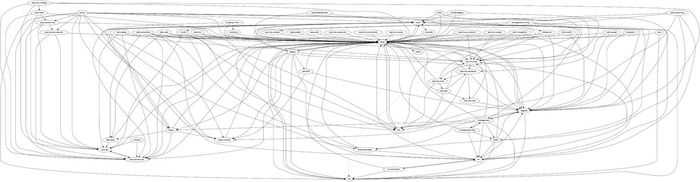
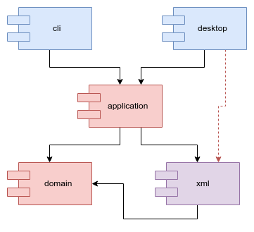
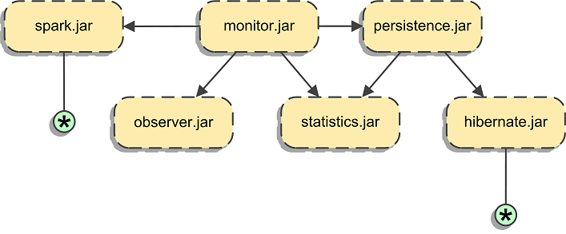
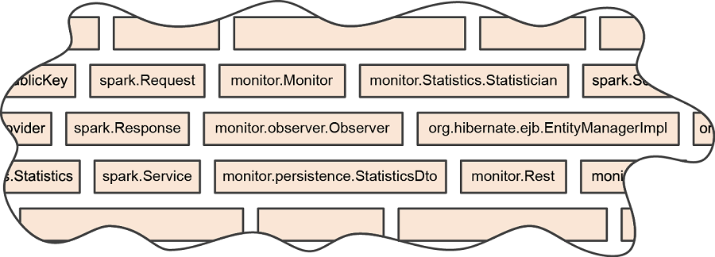
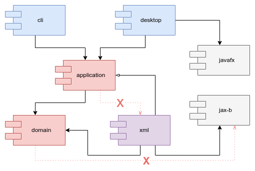

Novidades do Java 9 (e 10)
Alexandre Aquiles
Instrutor e Desenvolvedor na Caelum
- Twitter: @alex_aquiles
- Blog: alexandreaquiles.com.br
- GitHub: github.com/alexandreaquiles
- Livro: Controlando Versões com Git e GitHub
Temas
- Interatividade com o JShell - Java 9
- Mudanças nas APIs - Java 9
- Sistema de módulos - Java 9
- var - Java 10
Muitas novidades no Java 9
Java 8: 55 JEPs entregues
Java 9: 91 JEPs entregues
http://openjdk.java.net/projects/jdk9/
Focaremos nas mais importantes
Java é chato para explorar as APIs.
Sempre aquela mesma coisa:
public class Teste {
public static void main (String[] args) {
//código aqui...
}
}
Java Interativo
O Java 9 introduz um REPL:
jshell
DEMO
/exit
/vars
/list
/drop
/edit
/set editor
/reset
/imports
/open
/save
Mudanças nas APIs do Java 9
DEMO
List.of
Set.of
Map.of
LocalDate.datesUntil
Stream.iterate
Stream.takeWhile
Stream.dropWhile
Stream.ofNullable
Tem mais...
Optional.or
Optional.stream
Optional.ifPresentOrElse
Collectors.flatMapping
Collectors.filtering
Busca no Javadoc
https://docs.oracle.com/javase/9/docs/api/overview-summary.html
Java Platform Module System (JPMS)
rt.jar do JDK 7 b65
base dependia de Logging que dependia de JMX
que dependia de JNDI que dependia de Applet
JEP 200: The Modular JDK

Módulo java.base
java.lang
java.util
java.util.function
java.util.stream
java.time
java.math
java.text
java.io
java.nio
java.net
Outros módulos
java.sql
java.desktop
java.logging
java.scripting
...
Erros ao atualizar para Java 9 ☹
DEMO
Class Path x Module Path
Módulo java.se.ee
--add-modules java.xml.bind
Unnamed Module

Compilar com o Java 9
<maven.compiler.source>9</maven.compiler.source> <maven.compiler.target>9</maven.compiler.target>ou
<maven.compiler.release>9</maven.compiler.release>
<plugin>
<groupId>org.apache.maven.plugins</groupId>
<artifactId>maven-compiler-plugin</artifactId>
<version>3.7.0</version>
<configuration>
<compilerArgs>
<arg>--add-modules</arg>
<arg>java.xml.bind</arg>
</compilerArgs>
</configuration>
</plugin>
<plugin>
<artifactId>maven-surefire-plugin</artifactId>
<version>2.21.0</version>
<configuration>
<argLine>
--add-modules java.xml.bind
</argLine>
</configuration>
</plugin>
JEP 320: Remove the Java EE and CORBA Modules
previsto para o JDK 11 (Setembro/2018)
<dependency> <groupId>javax.xml.bind</groupId> <artifactId>jaxb-api</artifactId> <version>2.3.0</version> </dependency> <dependency> <groupId>com.sun.xml.bind</groupId> <artifactId>jaxb-core</artifactId> <version>2.3.0</version> </dependency> <dependency> <groupId>com.sun.xml.bind</groupId> <artifactId>jaxb-impl</artifactId> <version>2.3.0</version> </dependency> <dependency> <groupId>javax.activation</groupId> <artifactId>javax.activation-api</artifactId> <version>1.2.0</version> </dependency>
E o Java FX?
Será que funciona sem configurações a mais?
DEMO
java --show-module-resolution
Unnamed Module
pode usar (por padrão)
java.se
javafx.base
javafx.controls
javafx.fxml
jdk.net
jdk.management
...
Modularizando o projeto
Por que modularizar?
- Para controlar as dependências entre partes do nosso código
- Para tornar a arquitetura explícita (não só um diagrama)
Módulos
- Unidade de implantação
- Unidade de composição
- Unidade de reuso (bibliotecas)
Java Application Architecture: Modularity Patterns, Kirk Knoernschild (2012)
Módulos Maven?
DEMO
Módulos Maven
Funcionam com Java 8 ✔
Encapsulamento ✗

Módulos Maven e JARs ☺
Class Path no runtime ☹
Module erasure
- Class Path é apenas uma lista de classes
- JAR é apenas um ZIP
- Dependências entre JARs não são mantidas em runtime
JSR 376/JEP 261: Module System
module-info.java
module br.com.empresa.modulo {
exports br.com.empresa.pacote;
requires br.com.empresa.outro.modulo;
}
module-info.java
module br.com.empresa.modulo {
exports br.com.empresa.pacote
to br.com.empresa.outro.modulo;
requires br.com.empresa.outro.modulo;
}
DEMO
Manifest.MF
Automatic-Module-Name: br.com.empresa.modulo
jar --file arquivo.jar --describe-module
java -cp diretorio ClassePrincipal
java -p diretorio --module modulo/ClassePrincipal
ou
java --module-path diretorio
--module modulo/ClassePrincipal
Dependências Transitivas
module br.com.empresa.modulo {
//...
requires transitive br.com.empresa.outro.modulo;
}
Reflection
open module br.com.empresa.modulo {
//...
}
Reflection
module br.com.empresa.modulo {
//...
opens br.com.empresa.pacote;
}
Reflection
module br.com.empresa.modulo {
//...
opens br.com.empresa.pacote
to br.com.empresa.outro.modulo;
}
JPMS
- Encapsulamento forte
- Configuração confiável
A Boa Modelagem
-
Proteger Regras de Negócio de mudanças
- na Tela
- no BD
- nos frameworks
- Isolar Mecanismos de Entrega
Inversão de Dependências
ServiceLoader API
module br.com.empresa.modulo {
//...
uses br.com.empresa.Servico;
}
module br.com.empresa.outro.modulo {
//...
provides br.com.empresa.Servico
with br.com.empresa.Implementacao;
}
Plugins em Java com Service Providers (Java 8)
Simplificando Service Providers com módulos do Java 9+


Várias outras novidades no Java 9
JEP 282: jlink: The Java Linker
JEP 266: More Concurrency Updates (Reactive Streams)
JEP 248: Make G1 the Default Garbage Collector
JEP 254: Compact Strings byte[]
JEP 295: Ahead-of-Time Compilation (Graal)
JEP 264: Platform Logging API and Service
JEP 259: Stack-Walking API
...
Novidades do Java 10
Java 8: 55 JEPs entregues
Java 9: 91 JEPs entregues
Java 10: 12 JEPs entregues
http://openjdk.java.net/projects/jdk/10/
JEP 286: Local-Variable Type Inference
DEMO
JEP 322: Time-Based Release Versioning
- Nova versão a cada 6 meses (Março/Setembro)
- Time-box fechado, escopo aberto
Java Improvements for Docker Containers
JDK-8146115: Improve docker container detection and resource configuration usage
JDK-8186248: Allow more flexibility in selecting Heap % of available RAM
JDK-8179498: attach in Linux should be relative to /proc/pid/root and namespace aware